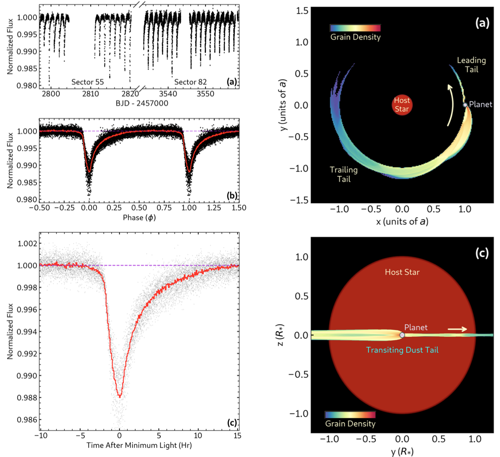
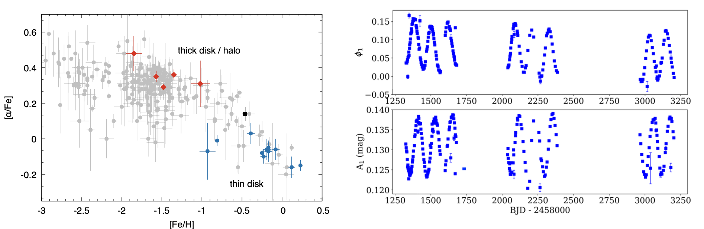
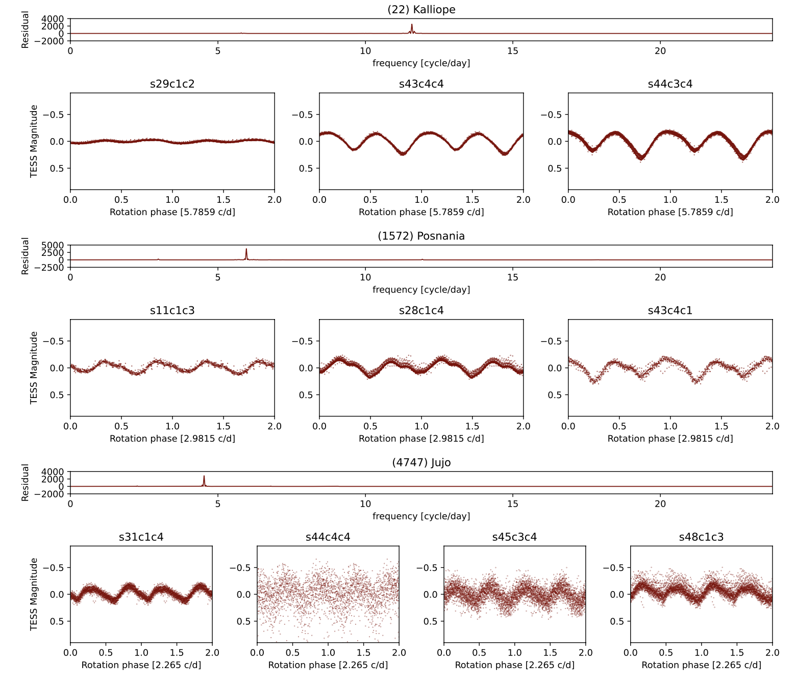

Welcome TESS followers to our latest news bulletin!
This week, we are looking at three recent papers from the archive. Enjoy!
First, we highlight the TESS-enabled discovery of BD+054868 Ab, an extreme case of a rocky planet being broken apart. The system advances our understanding of how planets form and evolve, and offers an exciting new opportunity to study planetary destruction processes in an extreme environment. BD+05 4868 Ab stands out due to the fact that the dust extends around the planet like a comet, showing the complex balance of radiation pressure and gravity. Additionally, the system presents an excellent opportunity for future composition studies using facilities like JWST, potentially revealing what minerals the planet is made of and providing unprecedented insights into planetary geology beyond the Solar system.
Next, we describe results from a study using TESS data to explore young, metal-rich RR Lyrae stars found in the Milky Way. These pulsating variables present a challenging puzzle for stellar evolution theory, as they are traditionally expected to be old. The presented work explores how these stars might form through binary mass transfer, which would explain how they can appear in younger stellar populations with higher metallicity than expected for typical RR Lyrae variables. This study provides important targets for future investigations using further astronomical observations, which would help confirm whether the proposed formation mechanism is possible.
The third paper highlights the unique opportunity provided by TESS to study the shapes and spin properties of main belt asteroids. In particular, the presented study investigates whether the TESS observations of asteroids across different orbital phases can reliably determine the basic shape parameters and spin axis orientations of these objects, which in turn tell us about their physical characteristics and evolution. This would maximize the scientific return from TESS observations, showcasing how nearly-continuous, long-duration, space-based photometric surveys can advance our understanding of Solar System small bodies.
Finally, we would like to offer our warmest farewell to Gaia! TESS and Gaia have been good friends for many years, with a prime example being the TESS-Gaia set of Full-Frame image lightcurves (TGLC, https://archive.stsci.edu/hlsp/tglc) which will be used for years to come.
A Disintegrating Rocky Planet with Prominent Comet-like Tails Around a Bright Star (Hon et al. 2025) : BD+05 4868 Ab is a newly-identified planet exhibiting distinctive comet-like dust tails that block starlight, providing astronomers with a rare opportunity to study catastrophic planetary evaporation in real-time. Observations from TESS revealed variable transit depths ranging from 0.8% to 2.0%, with highly asymmetric transit profiles characteristic of dusty effluents from a disintegrating planet. Through analytical modeling and numerical simulations, Hon et al. (2025) determined the dust particles are unusually large (1-10 microns) compared to typical interplanetary dust, suggesting specific mineral compositions that can withstand the planet's extreme environment. The authors estimated that the mass loss rate is 10 MEarth per Gyr, suggesting that the planet is in its final disintegration phase with only a few million years remaining before complete destruction. The host star has a mass of about 0.7 MSun, radius of 0.69 RSun, effective temperature of about 4500 K, and is slightly metal-poor compared to the Sun. Based on multi-wavelength follow-up observations, Hon et al. (2025) demonstrate achromatic transit depths across different color bands, further supporting the large dust grain size hypothesis and suggesting optically thick dust clouds. The planet orbits at a period of 1.27 days around a bright (V = 10.16 mag), nearby (distance of about 44 pc) K-dwarf star, with an equilibrium temperature of about 1820 K, making it the coolest and longest-period disintegrating planet to date. Additionally, the system contains an M-dwarf companion at a projected separation of 130 AU, potentially involved in the planet's migration to its current orbit via Kozai cycles. The authors note that the lack of detectable forward scattering in the light curve, despite its prominence in other disintegrating planets, can be explained by the combination of the planet's orbit and the optical properties of its dust tails.
Search for binary-channel metal-rich RR Lyrae candidates (Abdollahi et al. 2025) :
Abdollahi et al. (2025) present the identification of nine fundamental-mode RR Lyrae stars that satisfy multiple criteria suggesting they may have formed through binary channels: (i) kinematics-based residence in the Milky Way’s thin disk; (ii) metallicities higher than [Fe/H] > -1.0 dex; (iii) low α-element abundances consistent with the thin disk population; and (iv) proper motion anomalies possibly indicating the presence of companions. The authors selected the targets from an initial sample of 2143 RR Lyrae stars, among which only 24 showed proper motion anomalies or indications of co-moving companions. Abdollahi et al. (2025) compared metallicity measurements from multiple sources and calibrations to ensure accurate classification of the targets, and analyzed the α-element abundances. Combining all available data and taking into account the relevant considerations, the authors identify nine targets that satisfy all stated criteria – AA CMi, CN Lyr, DX Del, FW Lup, HH Pup, RW TrA, SW And, TW Her, and U Pic. To search for direct evidence of binarity, Abdollahi et al. (2025) examined TESS photometric data for signs of the light-travel time effect, which could indicate potential orbital motion with an unseen binary companion. The authors found no clear evidence of periodic variations within the expected orbital period range of 1-2000 days, which they attribute to likely insufficient observational coverage or data gaps. However, Abdollahi et al. (2025) identified slow phase changes in the Blazhko effect star ST Pic that could potentially be compatible with a light-travel time signal. The authors argue that the nine identified stars represent prime candidates for follow-up studies to confirm their binary nature and evolutionary history, and highlight two metal-rich RRc variables that could be targets for asteroseismic analysis to further probe their internal structure and formation mechanism.
Solar System objects observed with TESS -- Early Data Release 2: I. Spin-shape recovery potential of multi-epoch TESS observations (Takacs et al. 2025) :
To investigate the physical properties of 44 main belt asteroids, Takacs et al. (2025) applied lightcurve inversion techniques to TESS data, using simplified Lommel-Seeliger ellipsoid models to recover their approximate shapes and spin axis orientations. The authors implemented advanced processing techniques to handle the large volume of asteroid lightcurve data generated from TESS observations, including improved reference frame selection, artifact masking, and optimized aperture sizing. Comparing the TESS-based measurements with those from another large-scale survey using Gaia data and similar triaxial ellipsoid models for the 12 asteroids common to both datasets, Takacs et al. (2025) found a moderately good agreement between the two solutions, with an average angular separation of about 25 degrees between the corresponding spin axis determinations. Comparing the TESS results with those obtained from more complex shape models derived from ground-based measurements available in the Database of Asteroid Models from Inversion Techniques, the authors found the agreement to be somewhat poorer, with an average angular separation of approximately 33 degrees. Takacs et al. (2025) argue that the TESS lightcurves proved to be effective for determining rotation periods, and note their limitations in precisely pinpointing spin axis orientations and shape. Specifically, their analysis of the shape parameter revealed a tendency toward unusually elongated shapes, reaching the upper limit of the parameter range, likely due to the limited number of viewing geometries available from TESS. Takacs et al. (2025) note that despite these limitations, their results demonstrate that TESS data can effectively constrain the general regions where spin axes are likely to be located, providing valuable information for statistical studies of asteroid populations. This highlights both the potential and limitations of using space-based survey data with simplified shape models for asteroid characterization, suggesting that optimal results come from combining TESS' period determinations with complementary datasets providing broader geometrical coverage.

Fig. 1: Taken from Hon et al. (2025). Left panels: TESS lightcurve and corresponding best-fit models for the disintegrating planet BD+054868 Ab. Right panels: 3-D simulations of the systems as seen from above (upper panel), and during transit (lower panel).

Fig. 2: Taken from Abdollahi et al. (2025). Left panel: [α/H] vs [Fe/H] for bright RR Lyrae. The blue/red points represent thin/thick disk stars, respectively. Right panel: Variations in the phase (upper panel) and amplitude (lower panel) of the TESS lightcurve of ST Pic, showing the presence of a long-term trend in the former.

Fig. 3: Taken from Takacs et al. (2025). Frequency spectra and phase-folded TESS lightcurves for three main belt asteroids – (22) Kalliope (upper panels), (1572) Posnania (middle panels), and (4747) Jujo (lower panels).